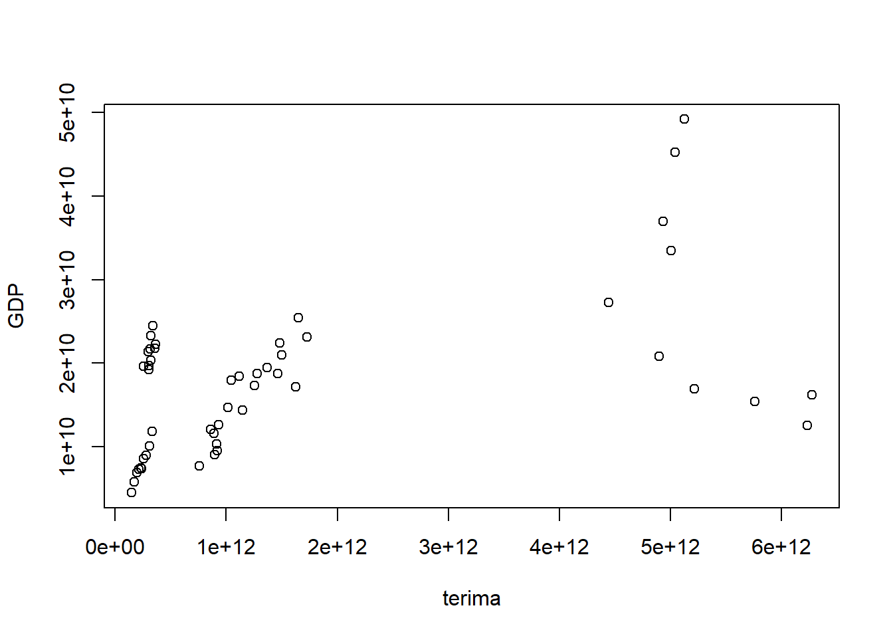
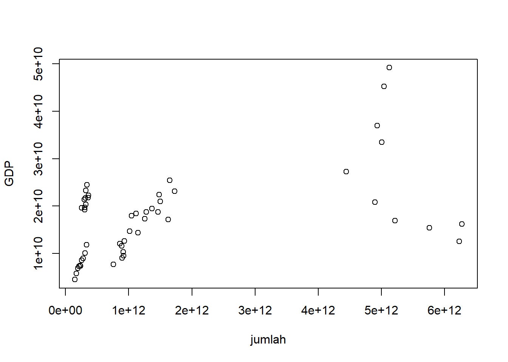

setwd('D:/metopel')
library(tidyverse)
library(readxl)
dat<-read_excel('wisatawan asia.xlsx')Pengaruh Kunjungan Wisatawan Asing Terhadap Pertumbuhan Ekonomi Di 5 Negara Asia
Metode Penelitian Politeknik APP Jakarta

1 Pendahuluan
1.1 Latar belakang
Pertumbuhan ekonomi tidak lepas dipengaruhi oleh banyak sektor, sektor pariwisata merupakan salah satu sektor yang memberikan banyak kontribusi terhadap perekonomian. Pariwisata dapat meningkatkan pendapatan devisa negara dan menciptakan lapangan pekerjaan yang akan berdampak pada kestabilan ekonomi. Menurut WTO (1993), Pariwisata meliputi kegiatan orang yang bepergian dan tinggal di tempat-tempat di luar lingkungan mereka yang biasa selama tidak lebih dari satu tahun berturut-turut untuk liburan, bisnis, dan tujuan lain.
Hubungan antara pemerintah dan pertumbuhan ekonomi adalah satu kesatuan utuh yang tidak dapat dipisahkan. Dalam hal ini pemerintah suatu negara dapat melakukan upaya dalam menarik wisatawan asing untuk masuk ke negaranya, mulai dari pembangunan infrastruktur, peningkatan pelayanan jasa yang ditawarkan dan memberikan kemudahan akses masuk. Sedangkan pengertian yang dimaksud wisatawan menurut Yoeti (1985) adalah seseorang yang melakukan perjalanan lebih dari 24 jam dan dilakukan hanya untuk sementara waktu serta tidak dalam rangka untuk mencari penghasilkan di negara yang dikunjungi. Di beberapa negara, industri pariwisata menepati urutan ke-4 atau ke-5 penghasil devisa negara.
Dengan majunya sektor pariwisata khususnya kunjungan dari wisatawan asing akan sangat berpengaruh pada pertumbuhan ekonomi suatu negara, hal itu dikarenakan dengan banyaknya wisatawan asing yang masuk ke suatu negara maka negara tersebut akan mendapat banyak pendapatan yang diperoleh dari wisatawan asing. Faktor pendapatan tersebut adalah dari jumlah wisatawan asing yang terus meningkat dimana wisatawan asing yang melakukan perjalanan wisata tentu akan melakukan pengeluaran melalui kegiatan konsumsi dan penggunaan beberapa jasa sebagai penunjang wisata.
1.2 Ruang lingkup
Ruang lingkup dari penelitian ini adalah meneliti seberapa banyak jumlah wisatawan asing yang berkunjung dan penerimaan dari pariwisata yang akan dibandingkan dengan pertumbuhan ekonomi di 5 negara asia, Asia Tenggara (Indonesia,Malaysia, Vietnam) dan Asia Timur (Jepang dan Korea Selatan) pada periode 2010-2019.
1.3 Rumusan masalah
Rumusan masalah dari penelitian ini berdasarkan latar belakang diatas adalah sebagai berikut :
1.Bagaimana pengaruh jumlah wisatawan asing terhadap pertumbuhan ekonomi di 5 negara asia?2.Bagaimana pengaruh dari penerimaan pariwisata terhadap pertumbuhan ekonomi di 5 negara asia?
1.4 Tujuan dan manfaat penelitian
Tujuan dari penelitian ini adalah untuk mengetahui seberapa besar pengaruh kunjungan wisatawan asing dan penerimaan pariwisata terhadap pertumbuhan ekonomi di 5 negara asia.
Manfaat dari penelitian ini adalah memberikan informasi mengenai pengaruh kunjungan wisatawan asing terhadap pertumbuhan ekonomi di 5 negara asia.
1.5 Package
Package yang digunakan dalam penelitian ini adalah sebagai berikut :
2 Studi pustaka
2.1 Definisi Wisatawan
Menurut A.J. Norwal, seorang wisatawan adalah seseorang yang memasuki wilayah negara lain dengan tujuan apapun selain usaha untuk mencari pekerjaan dan tinggal permanen dan yang mengeluarkan uang di negara kunjungan dan uang yang dibelanjakan bukan berasal dari negara tersebut. Wisatawan adalah seseorang yang melakukan perjalanan lebih dari 24 jam dan dilakukan hanya untuk sementara waktu serta tidak dalam rangka untuk mencari penghasilan di negara yang dikunjungi (Yoeti, 1985, p.129-130). Menurut Resolusi Dewan Ekonomi dan Sosial PBB No. 870 pasal 5 dijelaskan bahwa pengunjung adalah setiap orang yang mengunjungi suatu negara yang bukan merupakan tempat tinggalnya yang biasa dengan alasan apapun selain usaha untuk mencari pekerjaan.
2.2 Definisi Pariwisata
Pariwisata berasal dari dua kata yaitu Pari dan Wisata. Pari dapat diartikan sebagai banyak, berkali-kali, berputar-putar atau lengkap. Sedangkan Wisata dapat diartikan sebagai perjalanan atau bepergian yang dalam hal ini sinonim dengan kata “Travel” dalam bahasa Inggris. Atas dasar itu maka kata “pariwisata” dapat juga diartikan sebagai perjalanan yang dilakukan berkali-kali atau berputar-putar dari suatu tempat ketempat yang lain yang dalam bahasa Inggris disebut jugan dengan istilah “Tour”. Youti (1991:103). Sedangkan menurut Kodhyat (1998), pariwisata adalah perjalanan dari suatu tempat ketempat lain, bersifat sementara, dilakukan perorangan atau kelompok, sebagai usaha mencari keseimbangan atau keserasian dan kebahagiaan dengan lingkungan dalam dimensi sosial, budaya, alam dan ilmu.
Menurut Gamal (2002), pariwisata didefinisikan sebagai bentuk suatu proses kepergian sementara dari seseorang, lebih menuju ketempat lain diluar tempat tinggalnya. Dorongan kepergiannya adalah karena berbagai kepentingan baik karena kepentingan ekonomi, sosial, budaya, politik, agama, kesehatan maupun kepentingan lain. Menurut Mathieson & Wall dalam Pitana dan Gyatri (2005), bahwa pariwisata adalah kegiatan perpindahan orang untuk sementara waktu ke destinasi di luar tempat tinggal dan tempat bekerjanya dan melaksanakan kegiatan selama di destinasi dan juga penyiapan-penyiapan fasilitas untuk memenuhi kebutuhan mereka.
2.3 Pertumbuhan Ekonomi
Lincolin Arsyad (2004), pertumbuhan ekonomi diartikan sebagai kenaikan GDP/GNP tanpa memandang apakah kenaikan itu lebih besar atau lebih kecil dari tingkat pertumbuhan penduduk atau apakah perubahan struktur ekonomi terjadi atau tidak. Menurut Schumpeter, pertumbuhan ekonomi adalah peningkatan output masyarakat yang disebabkan oleh semakin banyaknya jumlah faktor produksi yang digunakan dalam proses produksi masyarakat tanpa adanya perubahan teknologi produksi itu sendiri.
Menurut Sukirno, pertumbuhan ekonomi berarti perkembangan kegiatan dalam perekonomian yang menyebabkan barang dan jasa yang diproduksikan dalam masayarakat bertambah dan kemakmuran masyarakat meningkat. Masalah pertumbuhan ekonomi dapat dipandang sebagai masalah makroekonomi dalam jangka panjang dari satu periode ke periode lainnya.
3 Metode penelitian
3.1 Data
Data yang digunakan dalam penelitian ini berasal dari World Trade Bank yang berisi data jumlah wisatawan, penerimaan pariwisata dan GDP.
| Negara Asia | tahun | jumlah | terima | GDP |
|---|---|---|---|---|
| Indonesia | 2010 | 7003000 | 7,62E+09 | 7,55E+11 |
| Malaysia | 2010 | 24577000 | 1,96E+10 | 2,55E+11 |
| Vietnam | 2010 | 5050000 | 4,45E+09 | 1,47E+11 |
| Jepang | 2010 | 8611000 | 1,54E+10 | 5,76E+12 |
| Korea Selatan | 2010 | 8798000 | 1,43E+10 | 1,14E+12 |
| Indonesia | 2011 | 7650000 | 9,04E+09 | 8,93E+11 |
| Malaysia | 2011 | 24714000 | 2,13E+10 | 2,98E+11 |
| Vietnam | 2011 | 6014000 | 5,71E+09 | 1,73E+11 |
| Jepang | 2011 | 6219000 | 1,25E+10 | 6,23E+12 |
| Korea Selatan | 2011 | 9795000 | 1,73E+10 | 1,25E+12 |
| Indonesia | 2012 | 8044000 | 9,46E+09 | 9,18E+11 |
| Malaysia | 2012 | 25033000 | 2,17E+10 | 3,14E+11 |
| Vietnam | 2012 | 6848000 | 6,85E+09 | 1,96E+11 |
| Jepang | 2012 | 8358000 | 1,62E+10 | 6,27E+12 |
| Korea Selatan | 2012 | 11140000 | 1,87E+10 | 1,28E+12 |
| Indonesia | 2013 | 8802000 | 1,03E+10 | 9,13E+11 |
| Malaysia | 2013 | 25715000 | 2,33E+10 | 3,23E+11 |
| Vietnam | 2013 | 7572000 | 7,25E+09 | 2,14E+11 |
| Jepang | 2013 | 10364000 | 1,69E+10 | 5,21E+12 |
| Korea Selatan | 2013 | 12176000 | 1,95E+10 | 1,37E+12 |
| Indonesia | 2014 | 9435000 | 1,16E+10 | 8,91E+11 |
| Malaysia | 2014 | 27437000 | 2,45E+10 | 3,38E+11 |
| Vietnam | 2014 | 7874000 | 7,41E+09 | 2,33E+11 |
| Jepang | 2014 | 13413000 | 2,08E+10 | 4,9E+12 |
| Korea Selatan | 2014 | 14202000 | 2,24E+10 | 1,48E+12 |
| Indonesia | 2015 | 10407000 | 1,21E+10 | 8,61E+11 |
| Malaysia | 2015 | 25721000 | 1,92E+10 | 3,01E+11 |
| Vietnam | 2015 | 7944000 | 7,35E+09 | 2,39E+11 |
| Jepang | 2015 | 19737000 | 2,73E+10 | 4,44E+12 |
| Korea Selatan | 2015 | 13232000 | 1,87E+10 | 1,47E+12 |
| Indonesia | 2016 | 11519000 | 1,26E+10 | 9,32E+11 |
| Malaysia | 2016 | 26757000 | 1,97E+10 | 3,01E+11 |
| Vietnam | 2016 | 10013000 | 8,5E+09 | 2,57E+11 |
| Jepang | 2016 | 24039000 | 3,35E+10 | 5E+12 |
| Korea Selatan | 2016 | 17242000 | 2,09E+10 | 1,5E+12 |
| Indonesia | 2017 | 14040000 | 1,47E+10 | 1,02E+12 |
| Malaysia | 2017 | 25948000 | 2,03E+10 | 3,19E+11 |
| Vietnam | 2017 | 12922000 | 8,89E+09 | 2,81E+11 |
| Jepang | 2017 | 28691000 | 3,7E+10 | 4,93E+12 |
| Korea Selatan | 2017 | 13336000 | 1,72E+10 | 1,62E+12 |
| Indonesia | 2018 | 15810000 | 1,79E+10 | 1,04E+12 |
| Malaysia | 2018 | 25832000 | 2,18E+10 | 3,59E+11 |
| Vietnam | 2018 | 15498000 | 1,01E+10 | 3,1E+11 |
| Jepang | 2018 | 31191000 | 4,53E+10 | 5,04E+12 |
| Korea Selatan | 2018 | 15347000 | 2,31E+10 | 1,72E+12 |
| Indonesia | 2019 | 16107000 | 1,84E+10 | 1,12E+12 |
| Malaysia | 2019 | 26101000 | 2,22E+10 | 3,65E+11 |
| Vietnam | 2019 | 18009000 | 1,18E+10 | 3,34E+11 |
| Jepang | 2019 | 31881000 | 4,92E+10 | 5,12E+12 |
| Korea Selatan | 2019 | 17503000 | 2,55E+10 | 1,65E+12 |
Penelitian ini menggunakan data yang berasal dari World Trade Bank.
3.2 Metode analisis
Metode yang dipilih adalah regresi univariat atau Ordinary Least Square (OLS) dengan 2 variabel independen. Penelitian ini bermaksud untuk mencari hubungan antara jumlah wisatawan, penerimaan pariwisata dan GDP. Spesifikasi yang dilakukan adalah:
\[ y_{t}=\beta_0 + \beta_1 x_t+ \beta_2 x_t + \mu_t \] Di mana :
\(y_t\) adalah GDP
\(x_t\) adalah Jumlah Wisatawan dan Penerimaan Pariwisata
4 Pembahasan
4.1 Pembahasan masalah
Sektor pariwisata merupakan salah satu sektor yang memberikan banyak kontribusi terhadap perekonomian. Jumlah wisatawan asing yang masuk ke suatu negara berpengaruh terhadap pendapatan negara tersebut hal itu didapat dari pengeluaran wisatawan melalui kegiatan konsumsi dan penggunaan berbagai jasa.
Penerimaan pariwisata sangat berhubungan dengan jumlah wisatawan asing yang datang berkunjung ke suatu negara dan pertumbuhan ekonomi. Semakin banyak jumlah wisatawan yang berkunjung maka semakin besar pula pendapatan yang didapat oleh negara tersebut.
library(readxl)
dat<-read_excel(("wisatawan asia.xlsx"))
head(dat)# A tibble: 6 × 5
`Negara Asia` tahun jumlah terima GDP
<chr> <dbl> <dbl> <dbl> <dbl>
1 Indonesia 2010 7003000 7618000000 7.55e11
2 Malaysia 2010 24577000 19619000000 2.55e11
3 Vietnam 2010 5050000 4450000000 1.47e11
4 Jepang 2010 8611000 15356000000 5.76e12
5 Korea Selatan 2010 8798000 14315000000 1.14e12
6 Indonesia 2011 7650000 9038000000 8.93e114.2 Analisis masalah
Hasil regresinya adalah sebagai berikut :
library(readxl)
dat<-read_excel("wisatawan asia.xlsx")
reg1<-lm(GDP~jumlah+terima,data=dat)
summary(reg1)
Call:
lm(formula = GDP ~ jumlah + terima, data = dat)
Residuals:
Min 1Q Median 3Q Max
-1.705e+12 -5.776e+11 -3.099e+11 3.856e+11 3.778e+12
Coefficients:
Estimate Std. Error t value Pr(>|t|)
(Intercept) 6.084e+11 4.136e+11 1.471 0.148
jumlah -2.321e+05 3.890e+04 -5.966 3.03e-07 ***
terima 2.625e+02 3.274e+01 8.016 2.41e-10 ***
---
Signif. codes: 0 '***' 0.001 '**' 0.01 '*' 0.05 '.' 0.1 ' ' 1
Residual standard error: 1.267e+12 on 47 degrees of freedom
Multiple R-squared: 0.58, Adjusted R-squared: 0.5621
F-statistic: 32.45 on 2 and 47 DF, p-value: 1.404e-09plot(dat$GDP,dat$terima,xlab="terima",ylab="GDP")
plot(dat$GDP,dat$terima,xlab="jumlah",ylab="GDP")
5 Kesimpulan
Melihat dari hasil penelitian yang telah dilakukan mengenai pengaruh jumlah wisatawan asing dan penerimaan pariwisata terhadap pertumbuhan ekonomi di 5 negara asia dalam periode 2010-2019 maka dapat disimpulkan bahwa setiap 1% penurunan jumlah wisatawan sejalan dengan kenaikan 2,62% jumlah penerimaan pariwisata dan disimpulkan bahwa jumlah kunjungan wisatawan asing dan penerimaan pariwisata berpengaruh terhadap pertumbuhan ekonomi.
6 Saran
Berdasarkan kesimpulan yang ditarik di atas mengenai pengaruh jumlah wisatawan dan penerimaan pariwisata terhadap pertumbuhan ekonomi di 5 negara asia terdapat saran yang ingin disampaikan yaitu pemerintah suatu negara harus melakukan upaya untuk menarik banyak wisatawan ke negaranya contohnya dengan cara meningkatkan pembangunan infrastruktur dan memberikan kemudahan akses masuk untuk wisatawan asing, karena dengan itu negara dapat memperoleh banyak keuntungan untuk pendapatan negara yang akan berdampak pada pertumbuhan ekonomi.
7 Referensi
DPR RI. (2019). Pariwisata Berikan Kontribusi pada Pendapatan Negara. https://www.dpr.go.id/berita/detail/id/24852/t/Pariwisata+Berikan+Kontribusi+pada+Pendapatan+Negara
Gamal, Suwantoro. (2002). Dasar-dasarPariwisata. Yogyakarta. Penerbit Andi
H. Kodhyat. (1998). Sejarah Pariwisata dan Perkembangannya di Indonesia. Jakarta. Grasindo.
Jhingan M.L. (2013). Ekonomi Pembangunan Dan Perencanaan. Jakarta: Rajawali Pers
Pitana,I Gde dan Diarta Surya I Ketut.(2009). Pengantar Ilmu Pariwisata. Yogyakarta: Andi Publishing.
World Trade Bank. GDP (current US$).
World Trade Bank. International tourism, number of arrival-East Asia & Pacific.World Trade Bank. International tourism, receipts (current US$).
Yoeti, Oka A. (1991). Pengantar Ilmu Pariwisata. Bandung: ANGKASA.